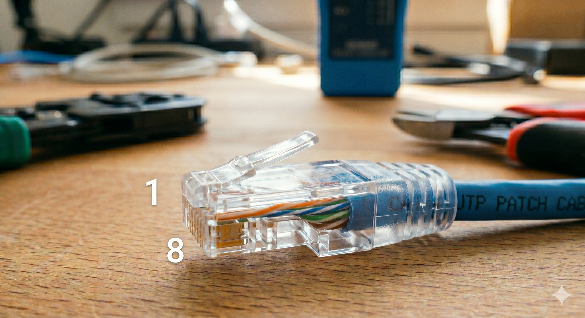
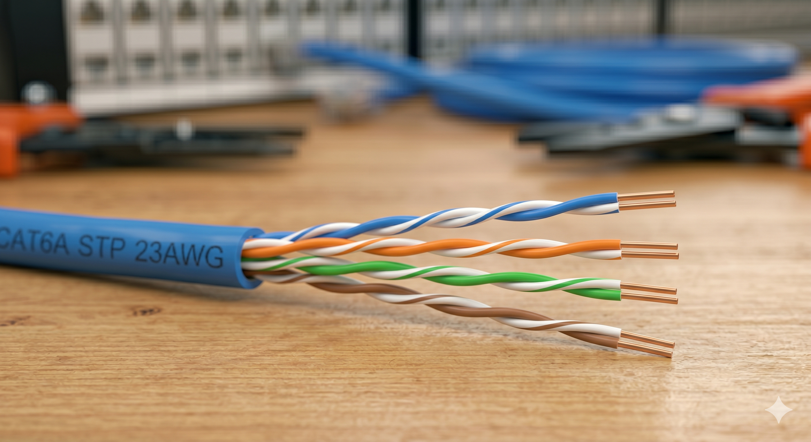
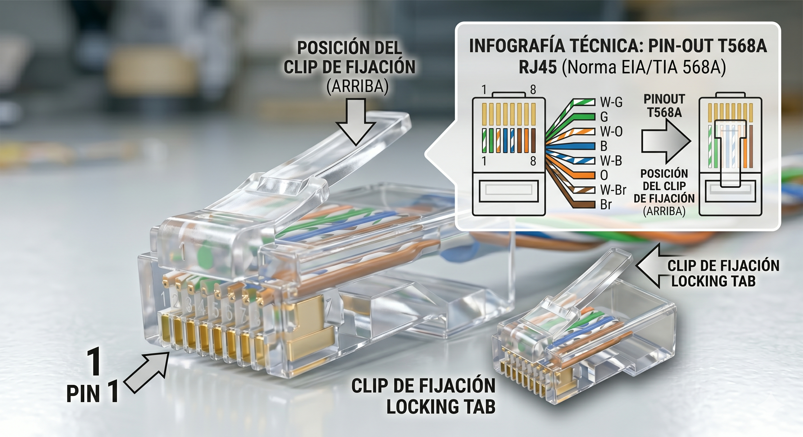
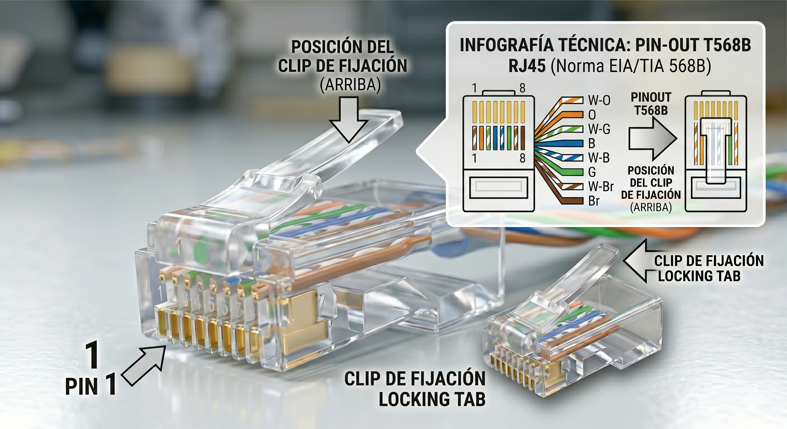
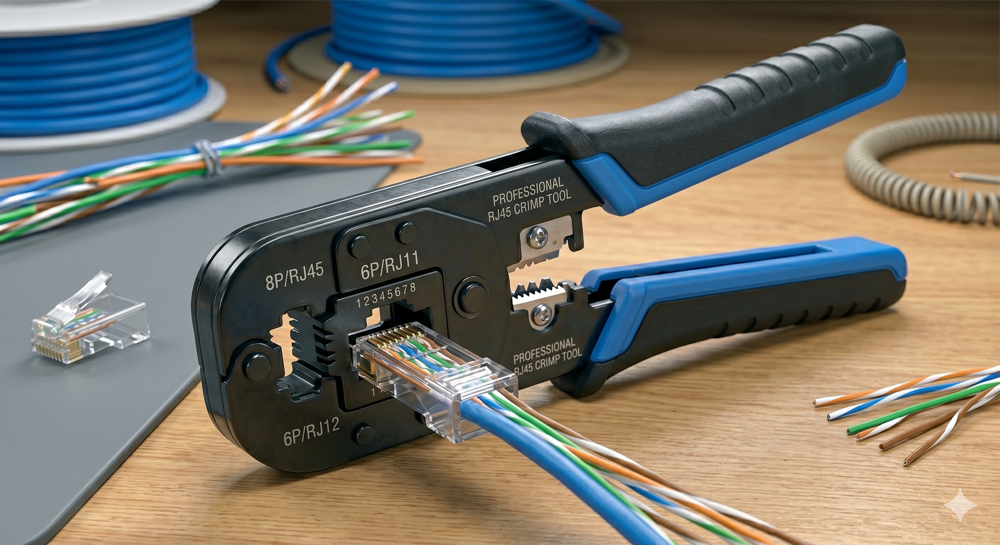
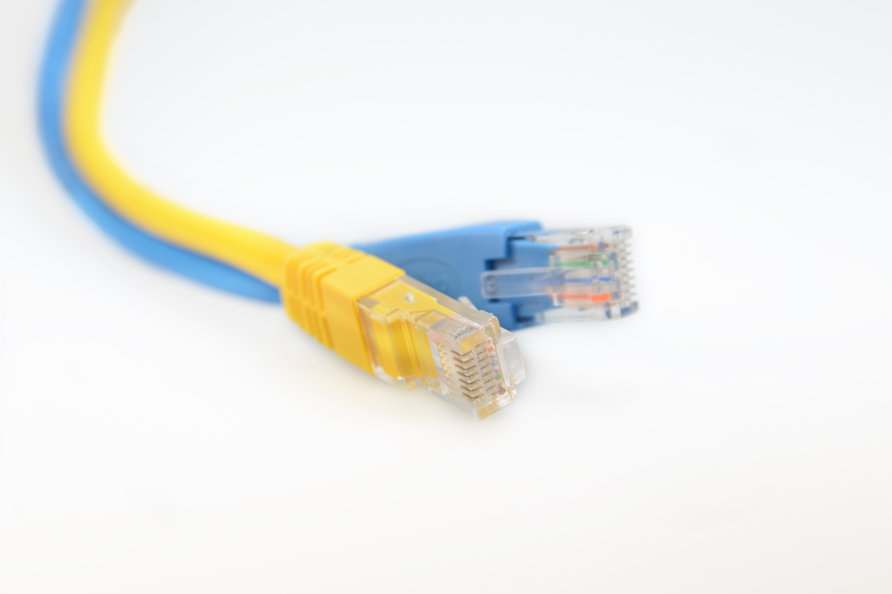

El connector
El connector utilitzat per a cables de pars trenats Ethernet és el RJ 45. Cal tindre amb compter la numeració dels pins.

El cable
El cable està format per 4 pars identificats amb colors:
- blau / blau-blanc
- taronja / taronja-blanc
- verd / verd-blanc
- marró / marró-blanc

Estàndards de pin-out
Per assignar cables als pins dels connectors hi ha 2 estàndars:
- T568A
- T568B


Crimpat
Una vegada inserit cada cable en la posició correcta, s'utilitza la crimpadora:

Gràcies per la vostra atenció
¿Dubtes?
